Sticky footer with fixed navbar
Open-source supply chain management
Supply chain management software designed to manage drugs and supplies for healthcare facilities in developing countries.
- Track stock within multiple facilities.
- Analyze demand to forecast future purchases.
- Track stock movements internally and externally.
- Know when your stock is expiring or stocked out.
- View stock history for any product or item.
- Record discrepancies when receiving international and domestic shipments.
- Perform cycle counts, inventory adjustments.
- Initiate purchasing through purchase orders.
- Allow clinicians to requisition stock from point-of-use locations within your hospital.
- Support for multiple languages (English, French, Spanish, and more).
- Automatic database migration via Liquibase.
- Manage all of your product master data in one place.
-
Synchronize data across multiple instances (powered by SymmetricDS).
Check out the OpenBoxes + SymmetricDS demo!
 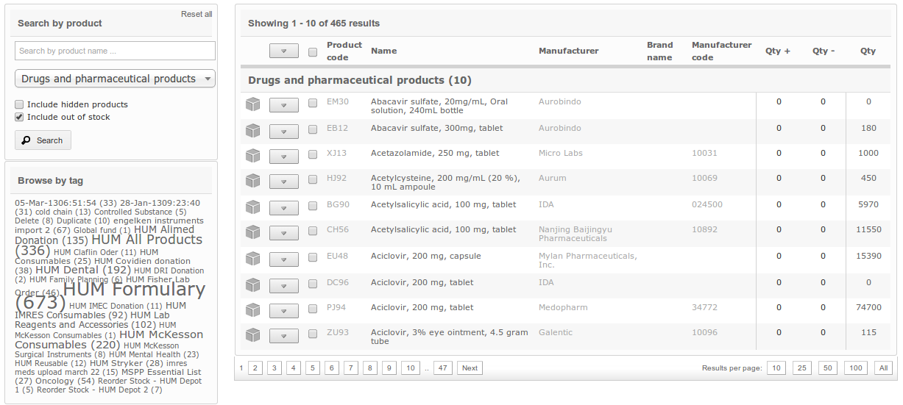
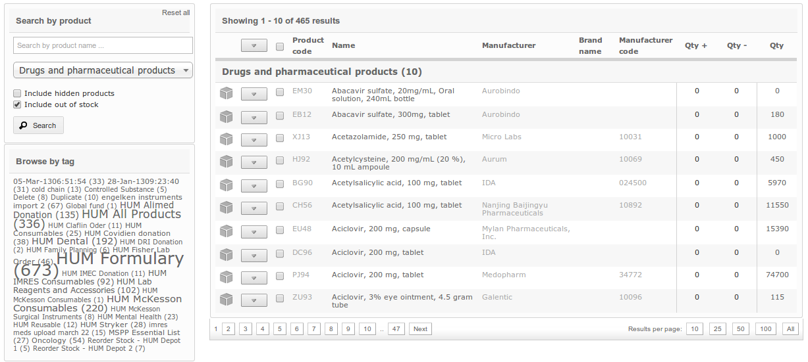


 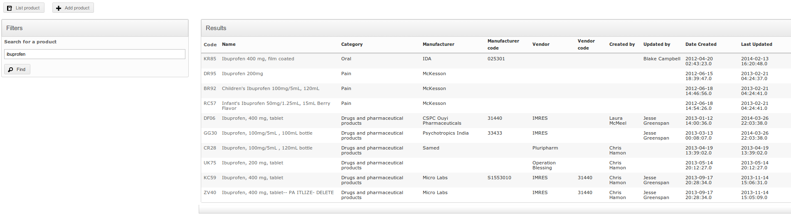
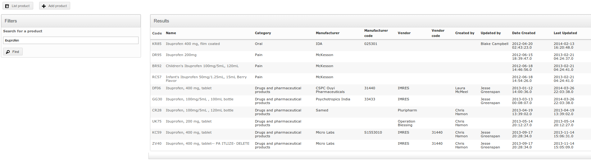
 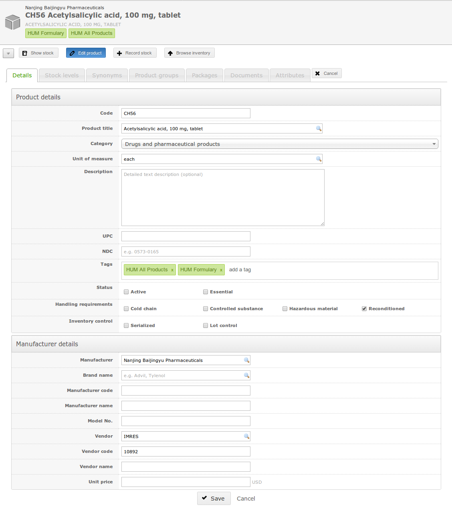
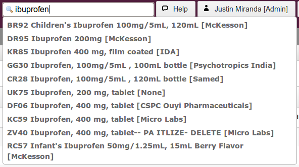
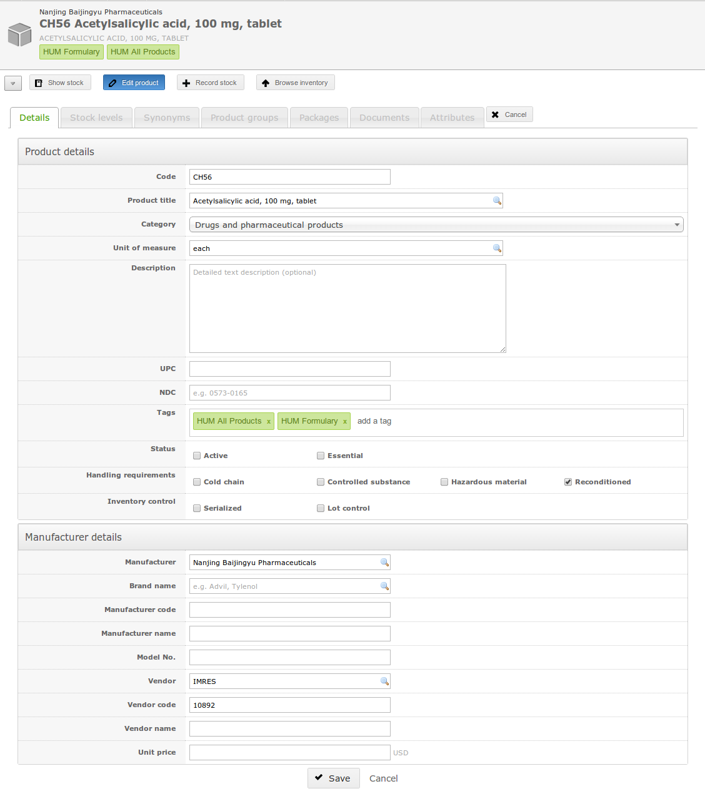
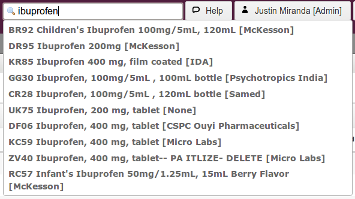
 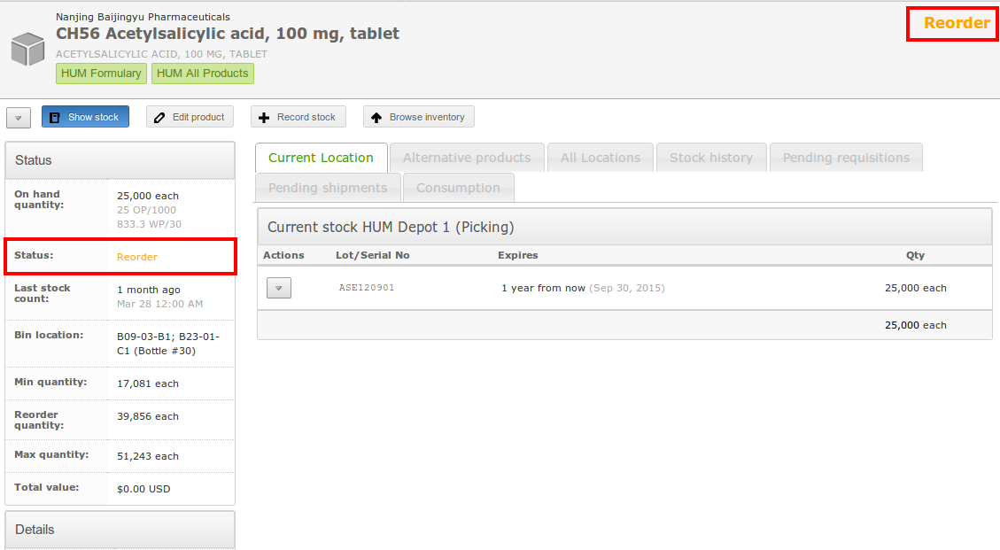
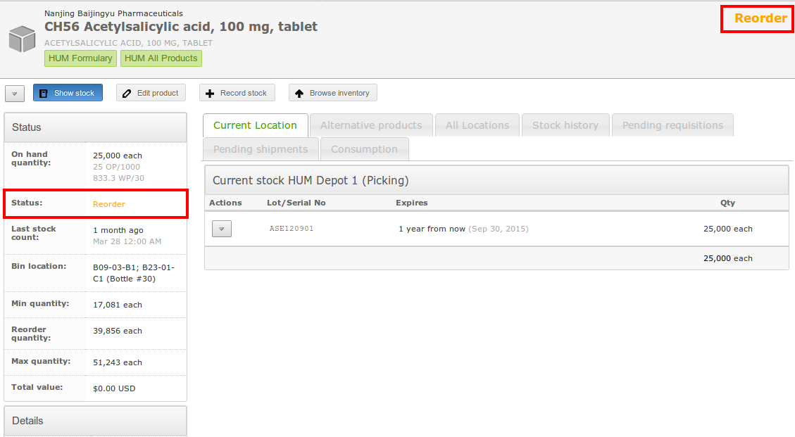


 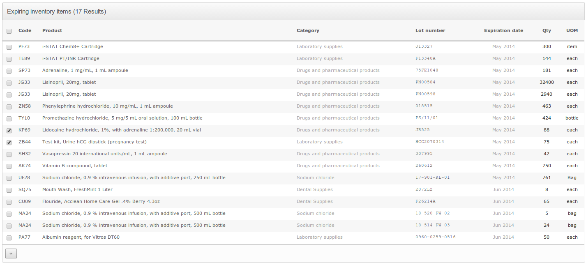
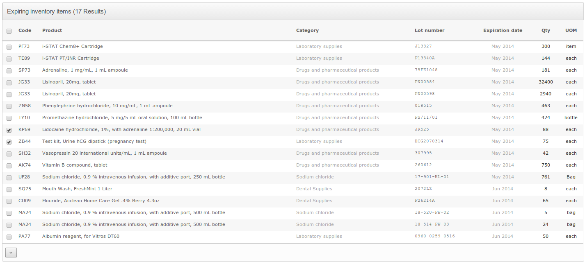
 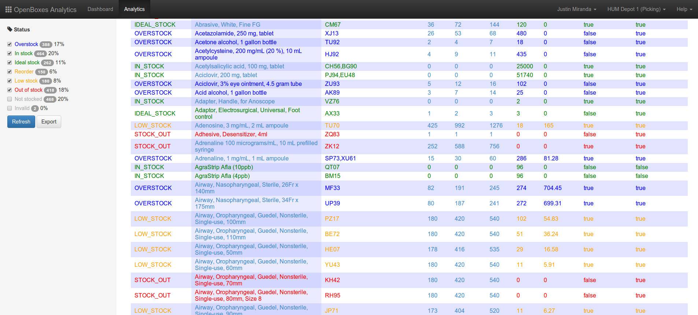
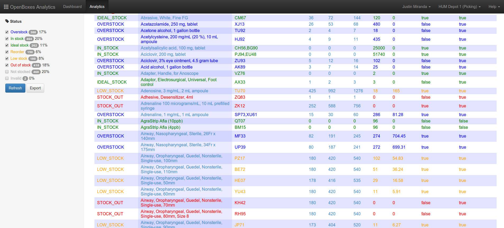